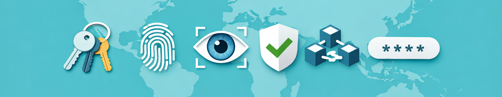

Passwörter, Identitäten & Sicherheit
Warum digitale Identität mehr ist als ein Login
Die meisten Menschen denken bei „Sicherheit im Internet“ zuerst an ein Passwort. Vielleicht etwas wie:
- ein Geburtsdatum
- ein Haustiername
- oder irgendeine Kombination, die man sich gerade noch merken kann
Und dann geht es weiter wie gewohnt: Login, Nutzung, Alltag.

Doch genau hier beginnt ein Missverständnis, denn digitale Identität ist längst mehr als nur ein Passwort.
📚 Dieser Blog-Post ist Teil der Serie: Privatsphäre im Alltag. „Privatsphäre im Alltag“ richtet sich an Menschen, die das Internet ganz selbstverständlich nutzen, Messenger, soziale Netzwerke, Smartphones, Cloud-Dienste und dabei ein Gefühl dafür entwickeln möchten, was im Hintergrund passiert.
🔎 Als Ergänzung empfehlen wir die Serie: Digitale Spurensuche, in der wir untersuchen, welche Daten große Plattformen sammeln und warum. Darauf aufbauend lohnt sich ein Blick auf die Serie: Digitale Souveränität. Diese zeigt konkret, wie du aus diesen Erkenntnissen echte Handlungsmacht und digitale Unabhängigkeit gewinnst.
Ein Passwort ist kein Schutzschild mehr allein
Früher war ein Passwort tatsächlich oft die einzige Barriere zwischen dir und deinem Account, Heute ist die Realität komplexer:
- Accounts sind miteinander verknüpft
- Geräte werden wiedererkannt
- Standorte und Logins werden analysiert
- und Systeme prüfen im Hintergrund, ob du „wirklich du“ bist
Ein Passwort ist heute eher ein Schlüssel in einem viel größeren Sicherheitssystem.
Digitale Identität entsteht überall
Vielleicht der wichtigste Punkt dieses Artikels: Deine digitale Identität ist nicht nur das, was du bewusst eingibst.
Sie entsteht aus vielen Bausteinen:
- Accounts (Google, Apple, Social Media, Shops)
- Geräte (Smartphone, Laptop, Wearables)
- Verhalten (Login-Zeiten, Nutzungsmuster)
- Standorte
- Kommunikationsverhalten
Zusammen ergibt das ein Bild, das oft stabiler ist als jedes einzelne Passwort.
Wenn Systeme erkennen, dass du „du“ bist
Moderne Plattformen versuchen nicht nur zu prüfen, ob ein Passwort stimmt. Sie versuchen zu verstehen:
- Ist dieses Gerät bekannt?
- Passt das Verhalten zum Nutzer?
- Ist dieser Login „typisch“?
Das nennt sich oft risikobasierte Authentifizierung.
Das bedeutet:
Du wirst nicht nur durch etwas abgesichert, das du weißt (Passwort),
sondern auch durch etwas, das du bist (Verhalten, Gerät, Muster).
Wenn ein Login mehr über dich verrät als gedacht
Ein einzelner Login wirkt harmlos. Doch im Hintergrund kann er viele Informationen liefern:
- Uhrzeit und Tagesmuster
- Gerätetyp
- Standort
- Netzwerkumgebung
- typische Nutzung
Über Zeit entsteht daraus ein sehr genaues Profil deiner digitalen Gewohnheiten.
Nicht sichtbar für dich.
Aber sichtbar für Systeme.
Passwörter sind oft das schwächste Glied
Ironischerweise ist das klassische Passwort häufig nicht das größte Sicherheitsproblem. Das Problem ist eher:
- Wiederverwendung auf vielen Plattformen
- einfache oder erratbare Kombinationen
- Phishing-Angriffe
- Datenlecks bei Diensten
Ein gestohlenes Passwort ist oft nicht das Ende, sondern der Anfang weiterer Zugriffe.
Zwei-Faktor-Authentifizierung: mehr als ein Zusatz
Viele kennen Zwei-Faktor-Authentifizierung (2FA), nutzen sie aber nicht konsequent. Dabei ist sie einer der wichtigsten Schritte in Richtung echter Sicherheit:
- etwas, das du weißt (Passwort)
- etwas, das du besitzt (Code, App, Gerät)
Selbst wenn ein Passwort bekannt wird, bleibt der Zugriff geschützt.
Digitale Identität ist verteilt
Ein wichtiger Perspektivwechsel: Es gibt nicht die eine digitale Identität.
Es gibt viele:
- berufliche Identität
- private Identität
- soziale Identität
- Konsum-Identität
- technische Identität (Geräte, Logins, Tokens)
Und sie sind oft miteinander verbunden, ohne dass wir es bewusst merken.
Wenn Kontrolle still wird
Das Spannende an moderner Sicherheit ist, sie passiert oft im Hintergrund.
- Geräte werden automatisch erkannt
- Logins werden bewertet
- Zugriffe werden freigegeben oder blockiert
Das fühlt sich bequem an. Und das ist es auch, aber es bedeutet auch: Du siehst viele dieser Entscheidungen nicht mehr direkt.
Digitale Souveränität beginnt beim Verständnis
Die entscheidende Frage ist deshalb nicht: Wie erstelle ich ein starkes Passwort?
Sondern: Wie entsteht meine digitale Identität überhaupt?
Digitale Souveränität bedeutet hier:
- zu verstehen, welche Systeme dich erkennen
- zu wissen, wo Identität verteilt ist
- bewusst mit Konten und Zugriffen umzugehen
- Sicherheit nicht nur als Technik, sondern als Konzept zu sehen
Ein Gedanke zum Schluss
Vielleicht ist das Passwort heute weniger das Zentrum unserer digitalen Identität.
Sondern eher ein einzelner Schlüssel in einem Haus, das aus vielen Türen besteht.
Und die eigentliche Frage ist nicht, wie stark dieser Schlüssel ist.
Sondern, wer alles Zugang zu diesem Haus hat und warum.
📚 Teil der Serie: Privatsphäre im Alltag
- Social Media: Bezahlen wir mit unserer Privatsphäre?
- Social Media: Was du über Datenweitergabe wissen solltest
- Smart Home: Wer hört mit? Datenschutzrisiken und wie du dich schützt
- Privatsphäre im digitalen Alltag, zwischen Illusion, Macht und Verantwortung
- Messenger & private Kommunikation, warum sich private Chats oft nur privat anfühlen
- Social Media & Sichtbarkeit, wer sieht eigentlich was?
- Wearables & Smart Devices, wenn dein Alltag zum Datenstrom wird
- Tracking & Werbung, wer verfolgt mich eigentlich im Internet?
- Cloud, Fotos & Backups, wem gehören meine Daten eigentlich?
- KI & Privatsphäre, was Systeme heute schon über uns verstehen
- Passwörter, Identitäten & Sicherheit, warum digitale Identität mehr ist als ein Login